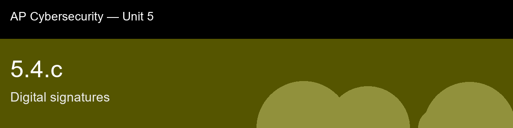

5.4.c, Digital signatures
Before class today. In 5.4.a you learned that a key pair can be used two ways: encrypt with the public key so only the
private-key holder can decrypt, or sign with the private key so anyone with the public key can
verify. This skill is about that second use case, the digital signature, which is the asymmetric
analogue of the HMAC you studied in 5.3.c.
The intuition to hold onto: The upgrade worth anticipating before this lecture: everything HMAC (5.3.c) gave you, proof the data wasn't altered, proof it came from someone who held a secret, a digital signature gives you too, plus one thing HMAC structurally cannot: non-repudiation. The reason is almost embarrassingly simple once you see it, HMAC's two parties share one secret, so either one of them could have produced any given tag, and there's no way to prove after the fact which one actually did. A signature uses two different keys for the two different actions, so only the signer's own private key could have produced it, and nobody, not even the verifier, could have forged it themselves.
A myth worth busting before we start: "A digital signature encrypts the message for confidentiality." → It does not provide secrecy at all; the message is often sent in the clear alongside the signature. Signing proves authenticity and integrity, not confidentiality, that requires separately encrypting with the recipient's public key (5.4.a).
Today's goal: Explain how a digital signature is created and verified using an asymmetric key pair and a cryptographic hash, and articulate why a valid signature provides authenticity, integrity, and non-repudiation in a way that a shared-secret MAC (5.3.c) cannot.
Handout: pre-lecture-handout.docx.

## 5.4.c, Digital signatures
**Before class today.** In 5.4.a you learned that a key pair can be used two ways: encrypt with the public key so only the
private-key holder can decrypt, or sign with the private key so anyone with the public key can
verify. This skill is about that second use case, the digital signature, which is the asymmetric
analogue of the HMAC you studied in 5.3.c.
**The intuition to hold onto:** The upgrade worth anticipating before this lecture: everything HMAC (5.3.c) gave you, proof the data wasn't altered, proof it came from someone who held a secret, a digital signature gives you too, plus one thing HMAC structurally cannot: non-repudiation. The reason is almost embarrassingly simple once you see it, HMAC's two parties share one secret, so either one of them could have produced any given tag, and there's no way to prove after the fact which one actually did. A signature uses two different keys for the two different actions, so only the signer's own private key could have produced it, and nobody, not even the verifier, could have forged it themselves.
**A myth worth busting before we start:** "A digital signature encrypts the message for confidentiality." → It does not provide secrecy at all; the message is often sent in the clear alongside the signature. Signing proves authenticity and integrity, not confidentiality, that requires separately encrypting with the recipient's public key (5.4.a).
**Today's goal:** Explain how a digital signature is created and verified using an asymmetric key pair and a cryptographic hash, and articulate why a valid signature provides authenticity, integrity, and non-repudiation in a way that a shared-secret MAC (5.3.c) cannot.
Handout: `pre-lecture-handout.docx`.